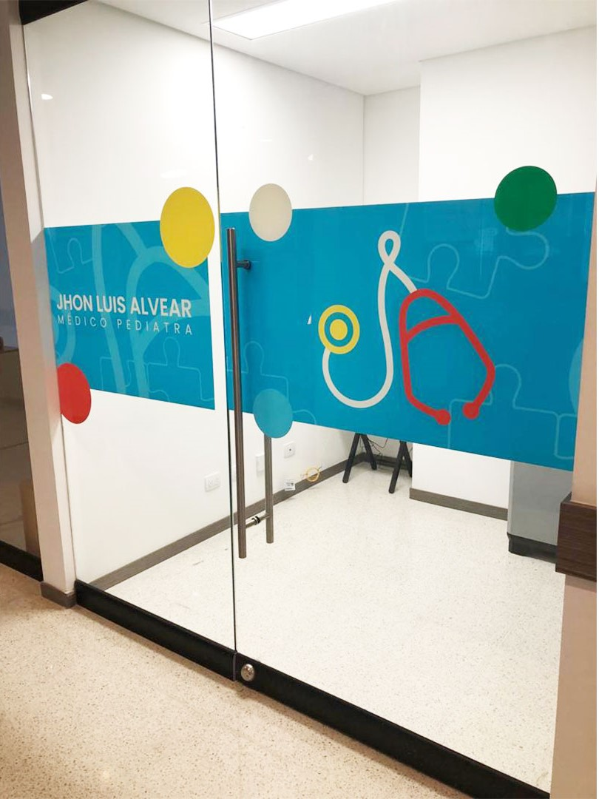
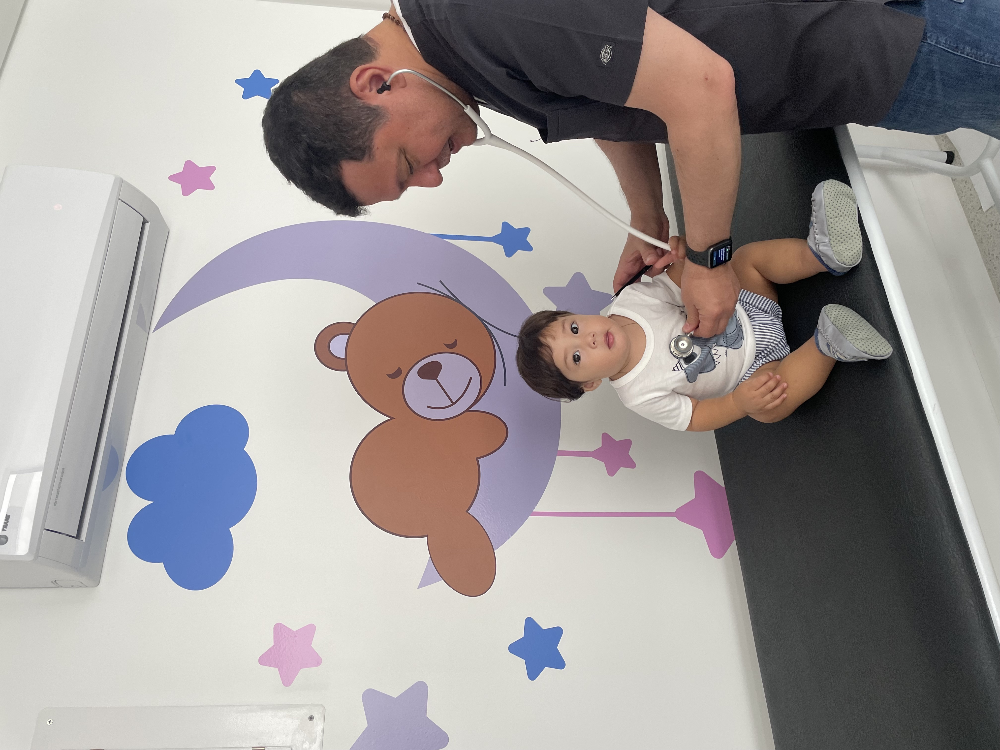
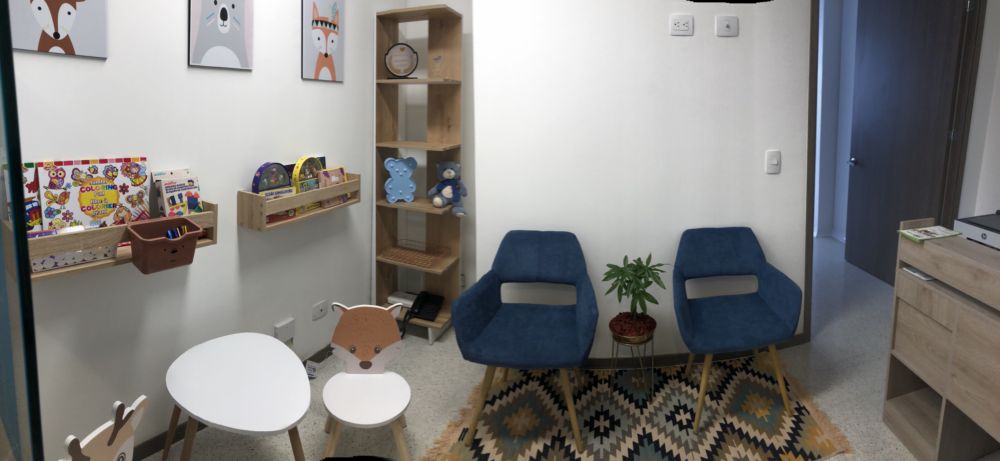

Ubicación
Galería de Imágenes





Jhon Luis Alvear
Soy un profesional especialista en pediatría con amplia experiencia en el manejo de enfermedades que afectan a la población infantil. Mi enfoque se centra en brindar atención médica con un profundo sentido de sensibilidad y respeto, asegurando que cada niño reciba el cuidado que merece. Además, considero fundamental el apoyo y acompañamiento a todo el núcleo familiar, trabajando en conjunto para promover la salud y el bienestar integral de los pequeños. Mi compromiso es crear un ambiente acogedor y empático, donde cada familia se sienta valorada y escuchada en su proceso de atención médica.
Consultorio Pediátrico
En el Consultorio Pediátrico Jhon Alvear, nos dedicamos a ofrecer una atención integral y compasiva a la población infantil y a sus familias. Nuestro compromiso es brindar un servicio de calidad que no solo atienda las necesidades médicas de los pequeños, sino que también apoye a cada miembro del núcleo familiar. Fomentamos relaciones basadas en la empatía, la sensibilidad y el respeto, asegurando que cada visita sea una experiencia positiva y enriquecedora.
Elegir el Consultorio Pediátrico Jhon Alvear significa optar por atención pediátrica de calidad en un ambiente cálido y acogedor. Nos comprometemos a brindar un cuidado compasivo y personalizado, enfocándonos en el bienestar integral de cada niño y en la tranquilidad de sus familias. Aquí encontrarás profesionales dedicados y apasionados por la salud infantil, con amplia experiencia y el compromiso de acompañarte en cada paso del desarrollo de tus pequeños.
Se enfoca en proporcionar un entorno de atención segura y personalizada para tus hijos.
Agendar citaSesión de apoyo y educación dirigida a madres y familias para un inicio saludable.
Agendar citaProporciona información detallada sobre el calendario de vacunación para tus hijos.
Agendar cita